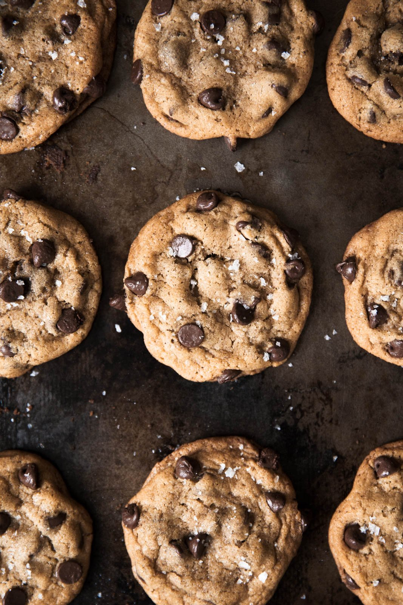

Browned Butter Chocolate Chip Cookies

These are by far, the best chocolate chip cookies I have ever had. The full recipe can be found here.
Ingredients
- 2 1/4 cups all purpose baking flour
- 1 teaspoon baking soda
- 1/2 teaspoon salt
- 1 cup unsalted butter
- 1 1/2 cups packed dark brown sugar
- 1/4 granulated sugar
- 1 large egg and 1 egg yolk (room temperature)
- 1 tablespoon vanilla extract
- 1 tablespoon plain greek yogurt
- 3/4 cup semi-sweet chocolate chips
- 3/4 cup milk chocolate chips (or dark, white, whatever you like!)
- coarse sea salt (for sprinkling on top)
Instructions
Browning the Butter
- Add butter to a large saucepan and place over medium heat.
- The butter will begin to crackle, and then eventually foam. Make sure you whisk constantly during this process.
- After a couple of minutes, the butter will begin to brown and turn a nice golden amber color on the bottom of the saucepan.
- Continue to whisk and remove from heat as soon as the butter begins to brown and give off a nutty aroma.
- Immediately transfer the butter to a medium bowl to prevent burning.
- Set aside to cool for 10 minutes or until cool enough to touch.
Wet Ingredients
- With an electric mixer, mix the brown butter and sugars until well combined, about 1 minute.
- Beat in the egg, egg yolk, vanilla, and yogurt until combined.
Dry Ingredients
- In a separate large bowl, whisk together the flour, baking soda, and salt.
Put It All Together!
- Slowly add the dry ingredients to the wet ingredients and beat on low-speed just until combined.
- Add both chocolate chips and mix on low speed until just incorporated into the dough.
- Chill your dough for 2 hours in the refrigerator, or up to 12-24 hours. Do not try to speed up this process. The dough needs to chill in order to be perfect.
Baking
- Preheat the oven to 350 degrees Fahrenheit and line a baking sheet with parchment paper.
- Measure 2 heaping tablespoons of the dough or use a medium cookie scoop.
- Place dough balls on cookie sheet, 2 inches apart.
- Bake the cookies 9 to 11 minutes or until the edges of the cookies begin to turn golden brown. They will look a bit underdone in the middle.
- Cool the cookies on the sheets for 5 minutes to allow them to set up, then sprinkle each cookie with sea salt.
- Remove the cooled cookies from the baking sheets and transfer to a wire rack to cool completely.
Click Here to return to the home page.